The ROSS project API¶
The Rotor module¶
-
class
ross.rotor_assembly.Rotor(shaft_elements, disk_elements=None, bearing_seal_elements=None, w=0, sparse=True, n_eigen=12, min_w=None, max_w=None, rated_w=None)[source]¶ A rotor object.
This class will create a rotor with the shaft, disk, bearing and seal elements provided.
- Parameters
- shaft_elementslist
List with the shaft elements
- disk_elementslist
List with the disk elements
- bearing_seal_elementslist
List with the bearing elements
- wfloat, optional
Rotor speed. Defaults to 0.
- sparsebool, optional
If sparse, eigenvalues will be calculated with arpack. Default is True.
- n_eigenint, optional
Number of eigenvalues calculated by arpack. Default is 12.
- Returns
- A rotor object.
Examples
>>> # Rotor without damping with 2 shaft elements 1 disk and 2 bearings >>> import ross as rs >>> steel = rs.materials.steel >>> z = 0 >>> le = 0.25 >>> i_d = 0 >>> o_d = 0.05 >>> tim0 = rs.ShaftElement(le, i_d, o_d, steel, ... shear_effects=True, ... rotary_inertia=True, ... gyroscopic=True) >>> tim1 = rs.ShaftElement(le, i_d, o_d, steel, ... shear_effects=True, ... rotary_inertia=True, ... gyroscopic=True) >>> shaft_elm = [tim0, tim1] >>> disk0 = rs.DiskElement.from_geometry(1, steel, 0.07, 0.05, 0.28) >>> stf = 1e6 >>> bearing0 = rs.BearingElement(0, kxx=stf, cxx=0) >>> bearing1 = rs.BearingElement(2, kxx=stf, cxx=0) >>> rotor = rs.Rotor(shaft_elm, [disk0], [bearing0, bearing1]) >>> rotor.run() >>> rotor.wd[0] # doctest: +ELLIPSIS 215.3707...
- Attributes
- evaluesarray
Rotor’s eigenvalues.
- evectorsarray
Rotor’s eigenvectors.
- wnarray
Rotor’s natural frequencies in rad/s.
- wdarray
Rotor’s damped natural frequencies in rad/s.
Methods
A(self[, w])State space matrix for an instance of a rotor.
C(self[, w])Damping matrix for an instance of a rotor.
G(self)Gyroscopic matrix for an instance of a rotor.
H_kappa(self, node, w[, return_T])Calculates the H matrix for a given node and natural frequency.
K(self[, w])Stiffness matrix for an instance of a rotor.
M(self)Mass matrix for an instance of a rotor.
campbell(self, speed_range[, frequencies, …])Calculates the Campbell diagram.
convergence(self[, n_eigval, err_max])Function to analyze the eigenvalues convergence through the number of shaft elements.
freq_response(self[, frequency_range, modes])Frequency response for a mdof system.
from_section(leng_data, o_ds_data, i_ds_data)This class is an alternative to build rotors from separated sections.
kappa(self, node, w[, wd])Calculates kappa for a given node and natural frequency.
kappa_mode(self, w)This function evaluates kappa given the index of the natural frequency of interest.
load(file_name)Load rotor from toml file.
plot_level1(self[, n, stiffness_range, num, ax])Plot level 1 stability analysis.
plot_rotor(self[, nodes, ax, bk_ax])Plots a rotor object.
plot_time_response(self, F, t, dof[, ax])Plot the time response.
plot_ucs(self[, stiffness_range, num, ax])Plot undamped critical speed map.
save(self, file_name)Save rotor to toml file.
save_mat(self, file_name)Save matrices and rotor model to a .mat file.
time_response(self, F, t[, ic])Time response for a rotor.
unbalance_response(self, node, magnitude, phase)frequency response for a mdof system.
whirl_direction(self)Get the whirl direction for each frequency.
whirl_values(self)Get the whirl value (0., 0.5, or 1.) for each frequency.
available_rotors
forced_response
mode_shapes
orbit
remove
run
static
transfer_matrix
-
A(self, w=None)[source]¶ State space matrix for an instance of a rotor.
- Returns
- State space matrix for the rotor.
Examples
>>> rotor = rotor_example() >>> np.round(rotor.A()[50:56, :2]) array([[ 0., 11110.], [-11106., -0.], [ -169., -0.], [ -0., -169.], [ -0., 10511.], [-10507., -0.]])
-
C(self, w=None)[source]¶ Damping matrix for an instance of a rotor.
- Returns
- Damping matrix for the rotor.
Examples
>>> rotor = rotor_example() >>> rotor.C()[:4, :4] array([[ 0., 0., 0., 0.], [ 0., 0., 0., 0.], [ 0., 0., 0., 0.], [ 0., 0., 0., 0.]])
-
G(self)[source]¶ Gyroscopic matrix for an instance of a rotor.
- Returns
- Gyroscopic matrix for the rotor.
Examples
>>> rotor = rotor_example() >>> rotor.G()[:4, :4] array([[ 0. , 0.01943344, -0.00022681, 0. ], [-0.01943344, 0. , 0. , -0.00022681], [ 0.00022681, 0. , 0. , 0.0001524 ], [ 0. , 0.00022681, -0.0001524 , 0. ]])
-
H_kappa(self, node, w, return_T=False)[source]¶ Calculates the H matrix for a given node and natural frequency.
The matrix H contains information about the whirl direction, the orbit minor and major axis and the orbit inclination. The matrix is calculated by 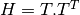 where the matrix T is constructed using the eigenvector corresponding to the natural frequency of interest:
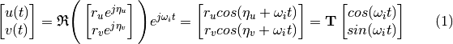
Where 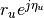 e 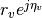 are the elements of the ith eigenvector, corresponding to the node and natural frequency of interest (mode).
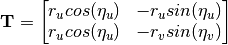
- Parameters
- node: int
Node for which the matrix H will be calculated.
- w: int
Index corresponding to the natural frequency of interest.
- return_T: bool, optional
If True, returns the H matrix and a dictionary with the values for 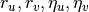.
Default is false.
- Returns
- H: array
Matrix H.
- Tdic: dict
Dictionary with values for .
It will be returned only if return_T is True.
Examples
>>> rotor = rotor_example() >>> # H matrix for the 0th node >>> rotor.H_kappa(0, 0) # doctest: +ELLIPSIS array([[ 8.78547006e-30, -4.30647963e-18], [ -4.30647963e-18, 2.11429917e-06]])
-
K(self, w=None)[source]¶ Stiffness matrix for an instance of a rotor.
- Returns
- Stiffness matrix for the rotor.
Examples
>>> rotor = rotor_example() >>> np.round(rotor.K()[:4, :4]/1e6) array([[ 47., 0., 0., 6.], [ 0., 46., -6., 0.], [ 0., -6., 1., 0.], [ 6., 0., 0., 1.]])
-
M(self)[source]¶ Mass matrix for an instance of a rotor.
- Returns
- Mass matrix for the rotor.
Examples
>>> rotor = rotor_example() >>> rotor.M()[:4, :4] array([[ 1.42050794, 0. , 0. , 0.04931719], [ 0. , 1.42050794, -0.04931719, 0. ], [ 0. , -0.04931719, 0.00231392, 0. ], [ 0.04931719, 0. , 0. , 0.00231392]])
-
campbell(self, speed_range, frequencies=6, frequency_type='wd')[source]¶ Calculates the Campbell diagram.
This function will calculate the damped natural frequencies for a speed range.
- Parameters
- speed_rangearray
Array with the speed range in rad/s.
- frequenciesint, optional
Number of frequencies that will be calculated. Default is 6.
- Returns
- resultsarray
Array with the natural frequencies corresponding to each speed of the speed_rad array. It will be returned if plot=False.
Examples
>>> rotor1 = rotor_example() >>> speed = np.linspace(0, 400, 101) >>> camp = rotor1.campbell(speed) >>> np.round(camp[:, 0], 1) # damped natural frequencies at the first rotor speed (0 rad/s) array([ 82.7, 86.7, 254.5, 274.3, 679.5, 716.8]) >>> np.round(camp[:, 10], 1) # damped natural frequencies at 40 rad/s array([ 82.6, 86.7, 254.3, 274.5, 676.5, 719.7])
-
convergence(self, n_eigval=0, err_max=0.01)[source]¶ Function to analyze the eigenvalues convergence through the number of shaft elements. Every new run doubles the number os shaft elements.
- n_eigvalint
The nth eigenvalue which the convergence analysis will run. Default is 0 (the first eigenvalue).
- err_maxfloat
Maximum allowable convergence error. Default is 1e-02
-
freq_response(self, frequency_range=None, modes=None)[source]¶ Frequency response for a mdof system.
This method returns the frequency response for a mdof system given a range of frequencies and the modes that will be used.
- Parameters
- forcearray, optional
Force array (needs to have the same length as frequencies array). If not given the impulse response is calculated.
- omegaarray, optional
- Array with the desired range of frequencies (the default
is 0 to 1.5 x highest damped natural frequency.
- modeslist, optional
Modes that will be used to calculate the frequency response (all modes will be used if a list is not given).
- Returns
- omegaarray
Array with the frequencies
- magdbarray
Magnitude (dB) of the frequency response for each pair input/output. The order of the array is: [output, input, magnitude]
- phasearray
Phase of the frequency response for each pair input/output. The order of the array is: [output, input, phase]
-
classmethod
from_section(leng_data, o_ds_data, i_ds_data, disk_data=None, brg_seal_data=None, sparse=True, min_w=None, max_w=None, n_eigen=12, w=0, nel_r=1)[source]¶ This class is an alternative to build rotors from separated sections. Each section has the same number (n) of shaft elements.
- Parameters
- leng_datalist
List with the lengths of rotor regions.
- o_d_datalist
List with the outer diameters of rotor regions.
- i_d_datalist
List with the inner diameters of rotor regions.
- disk_datadict, optional
Dict holding disks datas. Example : disk_data=DiskElement.from_geometry(n=2,
material=steel, width=0.07, i_d=0, o_d=0.28 )
*See ‘disk_element.py’ docstring for more information*
- brg_seal_datadict, optional
Dict holding lists of bearings and seals datas. Example : brg_seal_data=BearingElement(n=1, kxx=1e6, cxx=0,
kyy=1e6, cyy=0, kxy=0, cxy=0, kyx=0, cyx=0)
*See ‘bearing_seal_element.py’ docstring for more information*
- wfloat, optional
Rotor speed.
- nel_rint, optional
Number or elements per shaft region. Default is 1
- n_eigenint, optional
Number of eigenvalues calculated by arpack. Default is 12.
-
kappa(self, node, w, wd=True)[source]¶ Calculates kappa for a given node and natural frequency.
w is the the index of the natural frequency of interest. The function calculates the orbit parameter
 :
:
Where 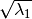 is the length of the semiminor axes and 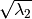 is the length of the semimajor axes.
If 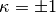, the orbit is circular.
If
is positive we have a forward rotating orbit
and if it is negative we have a backward rotating orbit.- Parameters
- node: int
Node for which kappa will be calculated.
- w: int
Index corresponding to the natural frequency of interest.
- wd: bool
If True, damping natural frequencies are used.
Default is true.
- Returns
- kappa: dict
A dictionary with values for the natural frequency, major axis, minor axis and kappa.
Examples
>>> rotor = rotor_example() >>> # kappa for each node of the first natural frequency >>> # Major axes for node 0 and natural frequency (mode) 0. >>> rotor.kappa(0, 0)['Major axes'] # doctest: +ELLIPSIS 0.00145... >>> # kappa for node 2 and natural frequency (mode) 3. >>> rotor.kappa(2, 3)['kappa'] # doctest: +ELLIPSIS 8.539...e-14
-
kappa_mode(self, w)[source]¶ This function evaluates kappa given the index of the natural frequency of interest. Values of kappa are evaluated for each node of the corresponding frequency mode.
- Parameters
- w: int
Index corresponding to the natural frequency of interest.
- Returns
- kappa_mode: list
A list with the value of kappa for each node related to the mode/natural frequency of interest.
Examples
>>> rotor = rotor_example() >>> # kappa for each node of the first natural frequency >>> rotor.kappa_mode(0) # doctest: +ELLIPSIS [-0.0, -0.0, -0.0, -0.0, -1.153...e-08, -0.0, -1.239...e-08]
-
static
load(file_name)[source]¶ Load rotor from toml file.
- Parameters
- file_namestr
- Returns
- rotorross.rotor.Rotor
-
plot_level1(self, n=None, stiffness_range=None, num=5, ax=None, **kwargs)[source]¶ Plot level 1 stability analysis.
This method will plot the stability 1 analysis for a given stiffness range.
- Parameters
- stiffness_rangetuple, optional
Tuple with (start, end) for stiffness range.
- numint
Number of steps in the range. Default is 5.
- axmatplotlib axes, optional
Axes in which the plot will be drawn.
- Returns
- axmatplotlib axes
Returns the axes object with the plot.
-
plot_rotor(self, nodes=1, ax=None, bk_ax=None)[source]¶ Plots a rotor object.
This function will take a rotor object and plot its shaft, disks and bearing elements
- Parameters
- nodesint, optional
Increment that will be used to plot nodes label.
- axmatplotlib axes, optional
Axes in which the plot will be drawn.
- bk_axbokeh plotting axes, optional
Axes in which the plot will be drawn.
- Returns
- axmatplotlib axes
Returns the axes object with the plot.
- bk_axbokeh plotting axes
Returns the axes object with the plot.
- Examples:
-
plot_time_response(self, F, t, dof, ax=None)[source]¶ Plot the time response.
This function will take a rotor object and plot its time response given a force and a time.
- Parameters
- Farray
Force array (needs to have the same number of rows as time array). Each column corresponds to a dof and each row to a time.
- tarray
Time array.
- dofint
Degree of freedom that will be observed.
- axmatplotlib axes, optional
Axes in which the plot will be drawn.
- Returns
- axmatplotlib axes
Returns the axes object with the plot.
-
plot_ucs(self, stiffness_range=None, num=20, ax=None)[source]¶ Plot undamped critical speed map.
This method will plot the undamped critical speed map for a given range of stiffness values. If the range is not provided, the bearing stiffness at rated speed will be used to create a range.
- Parameters
- stiffness_rangetuple, optional
Tuple with (start, end) for stiffness range.
- numint
Number of steps in the range. Default is 20.
- axmatplotlib axes, optional
Axes in which the plot will be drawn.
- Returns
- axmatplotlib axes
Returns the axes object with the plot.
-
time_response(self, F, t, ic=None)[source]¶ Time response for a rotor.
This method returns the time response for a rotor given a force, time and initial conditions.
- Parameters
- Farray
Force array (needs to have the same length as time array).
- tarray
Time array.
- icarray, optional
The initial conditions on the state vector (zero by default).
- Returns
- tarray
Time values for the output.
- youtarray
System response.
- xoutarray
Time evolution of the state vector.
-
unbalance_response(self, node, magnitude, phase, frequency_range=None)[source]¶ frequency response for a mdof system.
This method returns the frequency response for a mdof system given a range of frequencies and the modes that will be used.
- Parameters
- nodelist, int
Node where the unbalance is applied.
- magnitudelist, float
Unbalance magnitude (kg.m)
- phaselist, float
Unbalance phase (rad)
- Returns
- frequency_rangearray
Array with the frequencies
- magdbarray
Magnitude (dB) of the frequency response for each pair input/output. The order of the array is: [output, input, magnitude]
- phasearray
Phase of the frequency response for each pair input/output. The order of the array is: [output, input, phase]
-
ross.rotor_assembly.rotor_example()[source]¶ This function returns an instance of a simple rotor with two shaft elements, one disk and two simple bearings. The purpose of this is to make available a simple model so that doctest can be written using this.
- Returns
- An instance of a rotor object.
Examples
>>> rotor = rotor_example() >>> np.round(rotor.wd[:4]) array([ 83., 87., 255., 274.])
The “Element” class¶
-
class
ross.element.Element[source]¶ Element class. This class is a general class to be called for other files which create specific elements for the user
Methods
summary(self)A summary for the element.
C
K
M
dump_data
load
load_data
save
-
class
ross.bearing_seal_element.BearingElement(n, kxx, cxx, kyy=None, kxy=0, kyx=0, cyy=None, cxy=0, cyx=0, w=None)[source]¶ A bearing element. This class will create a bearing element. Parameters can be a constant value or speed dependent. For speed dependent parameters, each argument should be passed as an array and the correspondent speed values should also be passed as an array. Values for each parameter will be interpolated for the speed. Parameters ———- n: int
Node which the bearing will be located in
- kxx: float, array
Direct stiffness in the x direction.
- cxx: float, array
Direct damping in the x direction.
- kyy: float, array, optional
Direct stiffness in the y direction. (defaults to kxx)
- cyy: float, array, optional
Direct damping in the y direction. (defaults to cxx)
- kxy: float, array, optional
Cross coupled stiffness in the x direction. (defaults to 0)
- cxy: float, array, optional
Cross coupled damping in the x direction. (defaults to 0)
- kyx: float, array, optional
Cross coupled stiffness in the y direction. (defaults to 0)
- cyx: float, array, optional
Cross coupled damping in the y direction. (defaults to 0)
- w: array, optional
Array with the speeds (rad/s).
>>> # A bearing element located in the first rotor node, with these >>> # following stiffness and damping coefficients and speed range from >>> # 0 to 200 rad/s >>> Kxx = 1e6 >>> Kyy = 0.8e6 >>> Cxx = 2e2 >>> Cyy = 1.5e2 >>> W = np.linspace(0,200,11) >>> bearing0 = rs.BearingElement(n=0, kxx=Kxx, kyy=Kyy, cxx=Cxx, cyy=Cyy, w=W) >>> bearing0.K(W) array([[[1000000., 1000000., ... , 800000., 800000.]]]) >>> bearing0.C(W) array([[[200., 200., ... , 150., 150.]]])
Methods
from_table(n, file)Instantiate a bearing using inputs from a table, either excel or csv.
patch(self, position, ax, bk_ax)Bearing element patch.
summary(self)A summary for the element.
table_to_toml(n, file)Convert a table with parameters of a bearing element to a dictionary ready to save to a toml file that can be later loaded by ross.
C
K
M
dump_data
load
load_data
save
-
classmethod
from_table(n, file)[source]¶ Instantiate a bearing using inputs from a table, either excel or csv. Parameters ———- :param n : int. The node in which the bearing will be located in the rotor. :param file: str. Path to the file containing the bearing parameters. Returns ——- :return: A bearing object.
-
patch(self, position, ax, bk_ax)[source]¶ Bearing element patch. Patch that will be used to draw the bearing element. Parameters ———- ax : matplotlib axes, optional
Axes in which the plot will be drawn.
- bk_axbokeh plotting axes, optional
Axes in which the plot will be drawn.
- positiontuple
Position (z, y) in which the patch will be drawn.
- axmatplotlib axes
Returns the axes object with the plot.
- bk_axbokeh plotting axes
Returns the axes object with the plot.
-
classmethod
table_to_toml(n, file)[source]¶ Convert a table with parameters of a bearing element to a dictionary ready to save to a toml file that can be later loaded by ross. Parameters ———- :param n : int. The node in which the bearing will be located in the rotor. :param file: str. Path to the file containing the bearing parameters. Returns ——- :return: dict that is ready to save to toml and readable by ross.
-
class
ross.bearing_seal_element.SealElement(n, kxx, cxx, kyy=None, kxy=0, kyx=0, cyy=None, cxy=0, cyx=0, w=None, seal_leakage=None)[source]¶ Methods
from_table(n, file)Instantiate a bearing using inputs from a table, either excel or csv.
patch(self, position, ax, bk_ax)Seal element patch.
summary(self)A summary for the element.
table_to_toml(n, file)Convert a table with parameters of a bearing element to a dictionary ready to save to a toml file that can be later loaded by ross.
C
K
M
dump_data
load
load_data
save
-
patch(self, position, ax, bk_ax)[source]¶ Seal element patch. Patch that will be used to draw the seal element. Parameters ———- ax : matplotlib axes, optional
Axes in which the plot will be drawn.
- bk_axbokeh plotting axes, optional
Axes in which the plot will be drawn.
- positiontuple
Position in which the patch will be drawn.
- axmatplotlib axes
Returns the axes object with the plot.
- bk_axbokeh plotting axes
Returns the axes object with the plot.
-
-
class
ross.disk_element.DiskElement(n, m, Id, Ip)[source]¶ A disk element. This class will create a disk element from input data of inertia and mass. Parameters ———- n: int
Node in which the disk will be inserted.
- mfloat
Mass of the disk element.
- Idfloat
Diametral moment of inertia.
- Ipfloat
Polar moment of inertia
- R3dd608612911-1
‘Dynamics of Rotating Machinery’ by MI Friswell, JET Penny, SD Garvey & AW Lees, published by Cambridge University Press, 2010 pp. 156-157.
>>> disk = DiskElement(0, 32.58972765, 0.17808928, 0.32956362) >>> disk.Ip 0.32956362
Methods
G(self)This method will return the gyroscopic matrix for an instance of a disk element.
M(self)This method will return the mass matrix for an instance of a disk element.
from_geometry(n, material, width, i_d, o_d)A disk element.
patch(self, position, ax, bk_ax)Disk element patch.
summary(self)A summary for the element.
C
K
dump_data
load
load_data
save
-
G(self)[source]¶ This method will return the gyroscopic matrix for an instance of a disk element. Parameters ———- self Returns ——- Gyroscopic matrix for the disk element. Examples ——– >>> disk = DiskElement(0, 32.58972765, 0.17808928, 0.32956362) >>> disk.G() array([[ 0. , 0. , 0. , 0. ],
[ 0. , 0. , 0. , 0. ], [ 0. , 0. , 0. , 0.32956362], [ 0. , 0. , -0.32956362, 0. ]])
-
M(self)[source]¶ This method will return the mass matrix for an instance of a disk element. Parameters ———- self Returns ——- Mass matrix for the disk element. Examples ——– >>> disk = DiskElement(0, 32.58972765, 0.17808928, 0.32956362) >>> disk.M() array([[ 32.58972765, 0. , 0. , 0. ],
[ 0. , 32.58972765, 0. , 0. ], [ 0. , 0. , 0.17808928, 0. ], [ 0. , 0. , 0. , 0.17808928]])
-
classmethod
from_geometry(n, material, width, i_d, o_d)[source]¶ A disk element. This class will create a disk element from input data of geometry. Parameters ———- n: int
Node in which the disk will be inserted.
- materiallavirot.Material
Shaft material.
- width: float
The disk width.
- i_d: float
Inner diameter.
- o_d: float
Outer diameter.
- mfloat
Mass of the disk element.
- Idfloat
Diametral moment of inertia.
- Ipfloat
Polar moment of inertia
- 1
‘Dynamics of Rotating Machinery’ by MI Friswell, JET Penny, SD Garvey & AW Lees, published by Cambridge University Press, 2010 pp. 156-157.
>>> from ross.materials import steel >>> disk = DiskElement.from_geometry(0, steel, 0.07, 0.05, 0.28) >>> disk.Ip 0.32956362089137037
-
patch(self, position, ax, bk_ax)[source]¶ Disk element patch. Patch that will be used to draw the disk element. Parameters ———- ax : matplotlib axes, optional
Axes in which the plot will be drawn.
- bk_axbokeh plotting axes, optional
Axes in which the plot will be drawn.
- positionfloat
Position in which the patch will be drawn.
- axmatplotlib axes
Returns the axes object with the plot.
- bk_axbokeh plotting axes
Returns the axes object with the plot.
-
class
ross.shaft_element.ShaftElement(L, i_d, o_d, material, n=None, axial_force=0, torque=0, shear_effects=True, rotary_inertia=True, gyroscopic=True, shear_method_calc='cowper')[source]¶ A shaft element. This class will create a shaft element that may take into account shear, rotary inertia an gyroscopic effects. The matrices will be defined considering the following local coordinate vector: .. math:: [x_1, y_1, alpha_1, beta_1, x_2, y_2, alpha_2, beta_2]^T Where
 and
and  are the bending on the yz plane and
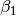 and 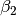 are the bending on the xz plane.
Parameters
———-
L : float
are the bending on the yz plane and
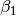 and 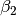 are the bending on the xz plane.
Parameters
———-
L : floatElement length.
- i_dfloat
Inner diameter of the element.
- o_dfloat
Outer diameter of the element.
- materialross.material
Shaft material.
- nint, optional
Element number (coincident with it’s first node). If not given, it will be set when the rotor is assembled according to the element’s position in the list supplied to the rotor constructor.
- axial_forcefloat
Axial force.
- torquefloat
Torque.
- shear_effectsbool
Determine if shear effects are taken into account. Default is False.
- rotary_inertiabool
Determine if rotary_inertia effects are taken into account. Default is False.
- gyroscopicbool
Determine if gyroscopic effects are taken into account. Default is False.
- shear_method_calcstring
Determines which shear calculation method the user will adopt Default is ‘hutchinson’
- Poissonfloat
Poisson coefficient for the element.
- Afloat
Element section area.
- Iefloat
Ie is the second moment of area of the cross section about the neutral plane Ie = pi*r**2/4
- phifloat
Constant that is used according to [R2097ad4dd647-1] to consider rotary inertia and shear effects. If these are not considered phi=0.
- R2097ad4dd647-1
‘Dynamics of Rotating Machinery’ by MI Friswell, JET Penny, SD Garvey & AW Lees, published by Cambridge University Press, 2010 pp. 158-166.
>>> from ross.materials import steel >>> le = 0.25 >>> i_d = 0 >>> o_d = 0.05 >>> Euler_Bernoulli_Element = ShaftElement(le, i_d, o_d, steel, ... shear_effects=False, rotary_inertia=False) >>> Euler_Bernoulli_Element.phi 0 >>> Timoshenko_Element = ShaftElement(le, i_d, o_d, steel, ... rotary_inertia=True, ... shear_effects=True) >>> Timoshenko_Element.phi 0.08795566502463055
- Attributes
- n
Methods
C(self)Stiffness matrix for an instance of a shaft element.
G(self)Gyroscopic matrix for an instance of a shaft element.
K(self)Stiffness matrix for an instance of a shaft element.
M(self)Mass matrix for an instance of a shaft element.
patch(self, position, ax, bk_ax)Shaft element patch.
section(L, ne, si_d, so_d, material[, n, …])Shaft section constructor.
summary(self)A summary for the element.
dump_data
load
load_data
save
-
C(self)[source]¶ Stiffness matrix for an instance of a shaft element.
- Returns
- Cnp.array
Damping matrix for the shaft element.
-
G(self)[source]¶ Gyroscopic matrix for an instance of a shaft element. Returns ——- Gyroscopic matrix for the shaft element. Examples ——– >>> from ross.materials import steel >>> # Timoshenko is the default shaft element >>> Timoshenko_Element = ShaftElement(0.25, 0, 0.05, steel) >>> Timoshenko_Element.G()[:4, :4] array([[-0. , 0.01943344, -0.00022681, -0. ],
[-0.01943344, -0. , -0. , -0.00022681], [ 0.00022681, -0. , -0. , 0.0001524 ], [-0. , 0.00022681, -0.0001524 , -0. ]])
-
K(self)[source]¶ Stiffness matrix for an instance of a shaft element. Returns ——- Stiffness matrix for the shaft element. Examples ——– >>> from ross.materials import steel >>> Timoshenko_Element = ShaftElement(0.25, 0, 0.05, steel, … rotary_inertia=True, … shear_effects=True) >>> Timoshenko_Element.K()[:4, :4]/1e6 array([[ 45.69644273, 0. , 0. , 5.71205534],
[ 0. , 45.69644273, -5.71205534, 0. ], [ 0. , -5.71205534, 0.97294287, 0. ], [ 5.71205534, 0. , 0. , 0.97294287]])
-
M(self)[source]¶ Mass matrix for an instance of a shaft element. Returns ——- Mass matrix for the shaft element. Examples ——– >>> Timoshenko_Element = ShaftElement(0.25, 0, 0.05, steel, … rotary_inertia=True, … shear_effects=True) >>> Timoshenko_Element.M()[:4, :4] array([[ 1.42050794, 0. , 0. , 0.04931719],
[ 0. , 1.42050794, -0.04931719, 0. ], [ 0. , -0.04931719, 0.00231392, 0. ], [ 0.04931719, 0. , 0. , 0.00231392]])
-
patch(self, position, ax, bk_ax)[source]¶ Shaft element patch. Patch that will be used to draw the shaft element. Parameters ———- ax : matplotlib axes, optional
Axes in which the plot will be drawn.
- bk_axbokeh plotting axes, optional
Axes in which the plot will be drawn.
- positionfloat
Position in which the patch will be drawn.
- axmatplotlib axes
Returns the axes object with the plot.
- bk_axbokeh plotting axes
Returns the axes object with the plot.
-
classmethod
section(L, ne, si_d, so_d, material, n=None, shear_effects=True, rotary_inertia=True, gyroscopic=True)[source]¶ Shaft section constructor. This method will create a shaft section with length ‘L’ divided into ‘ne’ elements. Parameters ———- i_d : float
Inner diameter of the section.
- o_dfloat
Outer diameter of the section.
- Efloat
Young’s modulus.
- G_sfloat
Shear modulus.
- materialross.material
Shaft material.
- nint, optional
Element number (coincident with it’s first node). If not given, it will be set when the rotor is assembled according to the element’s position in the list supplied to the rotor constructor.
- axial_forcefloat
Axial force.
- torquefloat
Torque.
- shear_effectsbool
Determine if shear effects are taken into account. Default is False.
- rotary_inertiabool
Determine if rotary_inertia effects are taken into account. Default is False.
- gyroscopicbool
Determine if gyroscopic effects are taken into account. Default is False.
- elements: list
List with the ‘ne’ shaft elements.
>>> # shaft material >>> from ross.materials import steel >>> # shaft inner and outer diameters >>> si_d = 0 >>> so_d = 0.01585 >>> sec = ShaftElement.section(247.65e-3, 4, 0, 15.8e-3, steel) >>> len(sec) 4 >>> sec[0].i_d 0
The “Material” class¶
Materials module.
This module defines the Material class and defines some of the most common materials used in rotors.
-
class
ross.materials.Material(name, rho, **kwargs)[source]¶ Material.
Class used to create a material and define its properties. Density and at least 2 arguments from E, G_s and Poisson should be provided.
Run Material.available_materials() for materials already provided.
- Parameters
- namestr
Material name.
- Efloat
Young’s modulus (N/m**2).
- G_sfloat
Shear modulus (N/m**2).
- rhofloat
Density (N/m**3).
- colorstr
Can be used on plots.
Examples
>>> AISI4140 = Material(name='AISI4140', rho=7850, E=203.2e9, G_s=80e9) >>> Steel = Material(name="Steel", rho=7810, E=211e9, G_s=81.2e9) >>> AISI4140.Poisson 0.27
Methods
available_materials
dump_data
load_data
remove_material
save_material
use_material